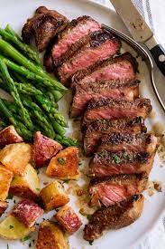

Tito's Steak Marinade

Description
This is a brief description of the steak, its good and what not. Trust me this is the best steak you will ever eat
Ingredients
- 3 lbs of high-quality marinade, from the hills of Peru, or something
- 3 gallons of imported limes from stafrombilous beater
- A pinch of essence of pure joy
- Butter, quantity, as much as you like
- 2 tbs of high expectations
- A steak
Steps
- Heat a cast iron skillet until the metal is soft and red
- Reshape heated skillet to perfectly mimic the shape of your steak
- Throw away the skillet, trust me the skillet was not the right shape
- Heat a new skillet to a reasonable temperature
- Place a glob of butter in the skillet, careful not to burn the butter. Being a professional chef is not required but highly suggested here
- Gently fling the steak into the skillet from a minium of 3ft away
- Add a generous amount of marinade, you know that you are done when the steak is no longer visible
- Enjoy!